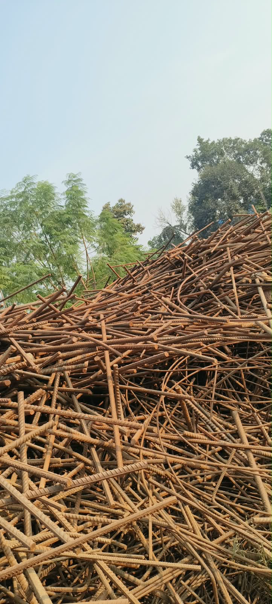
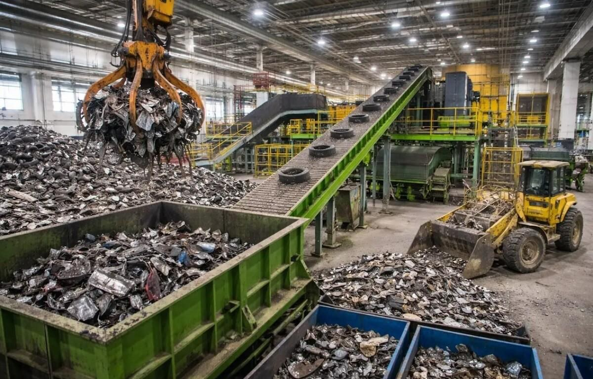
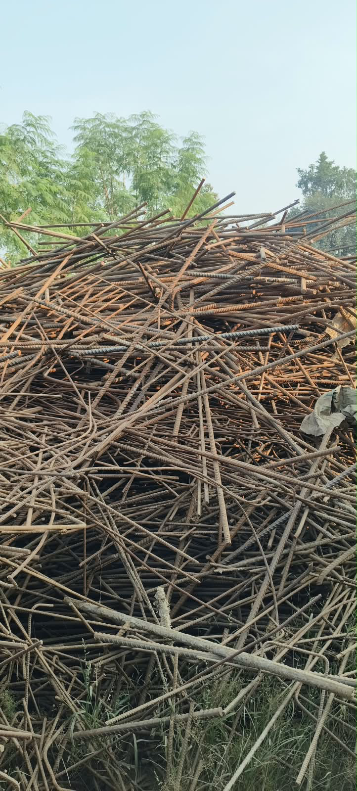
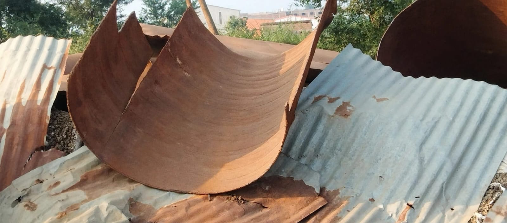
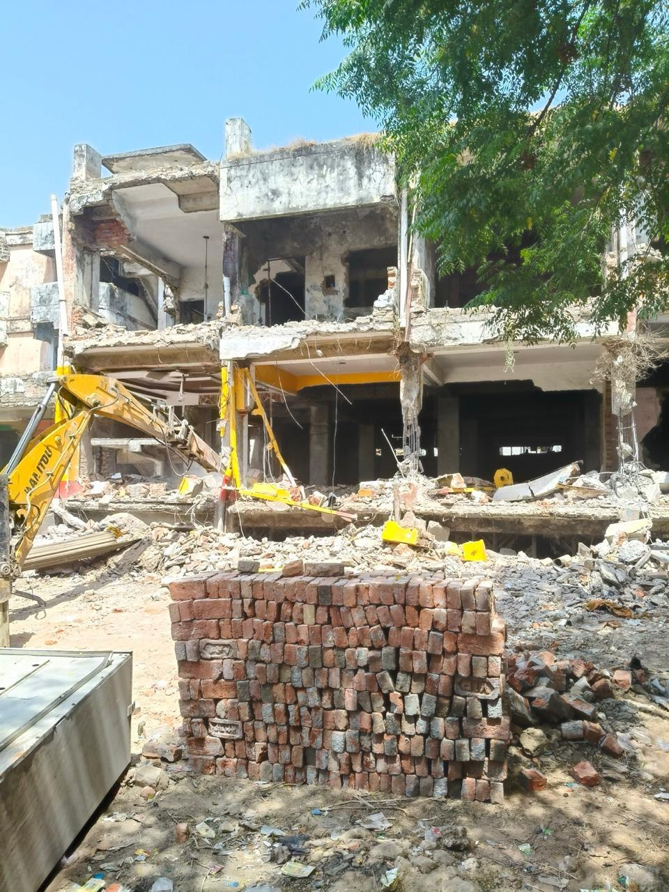
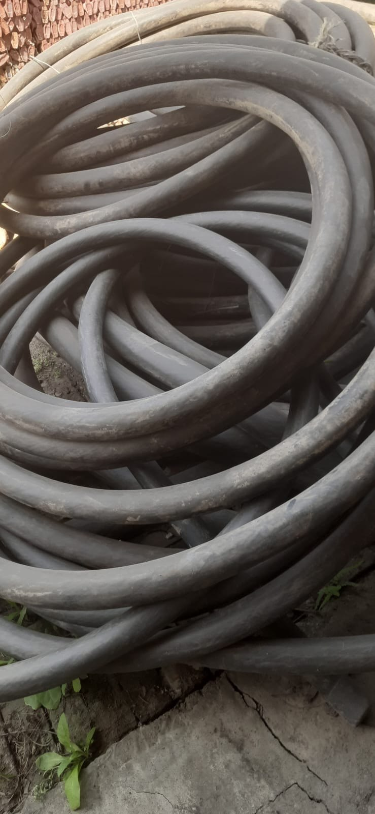
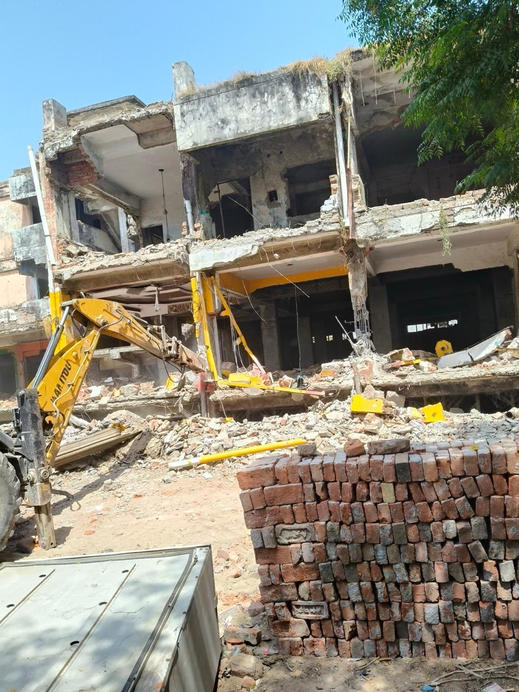
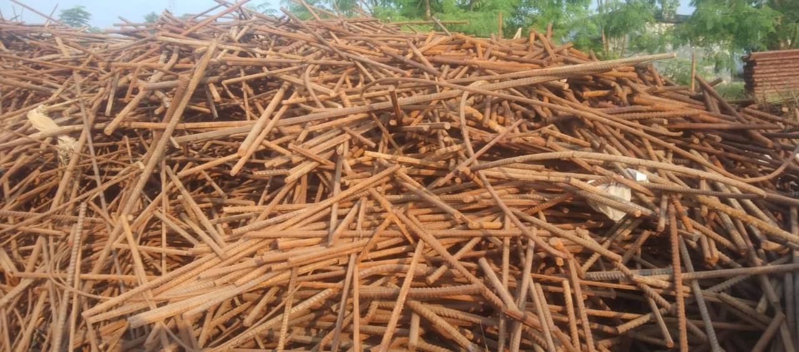

SCRAP MATERIAL
Iron Scrap Trading
We purchase and trade iron and loha scrap. Share the material details and approximate quantity for an enquiry.
ENQUIRE ON WHATSAPP
Scrap material purchasing and trading enquiries in Sarojini Nagar, Lucknow.
Every enquiry is different. Share the material type and approximate quantity so our team can discuss your requirement.

We purchase and trade iron and loha scrap. Share the material details and approximate quantity for an enquiry.
ENQUIRE ON WHATSAPP
Connect with us to discuss MS scrap material, availability and bulk purchasing.
ENQUIRE ON WHATSAPP
Enquire about aluminium scrap purchasing and trading for your business needs.
ENQUIRE ON WHATSAPP
Discuss scrap material available from an old factory or facility.
ENQUIRE ON WHATSAPPIndustrial metal waste and scrap purchasing enquiries for businesses.
ENQUIRE ON WHATSAPP
Contact our team regarding scrap generated during factory dismantling.
ENQUIRE ON WHATSAPP
We handle enquiries for raddi and waste material purchasing.
ENQUIRE ON WHATSAPP
For bulk scrap collection enquiries, share your location and material details.
ENQUIRE ON WHATSAPP